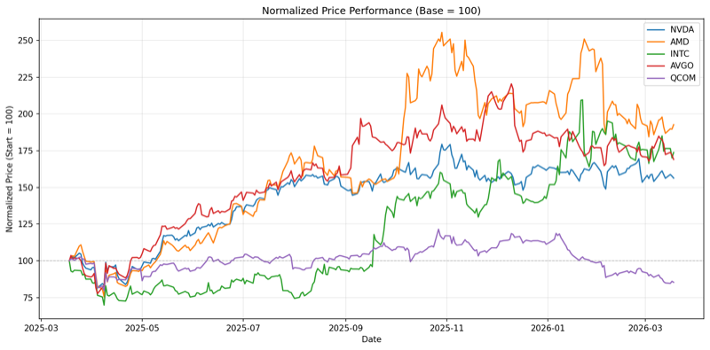
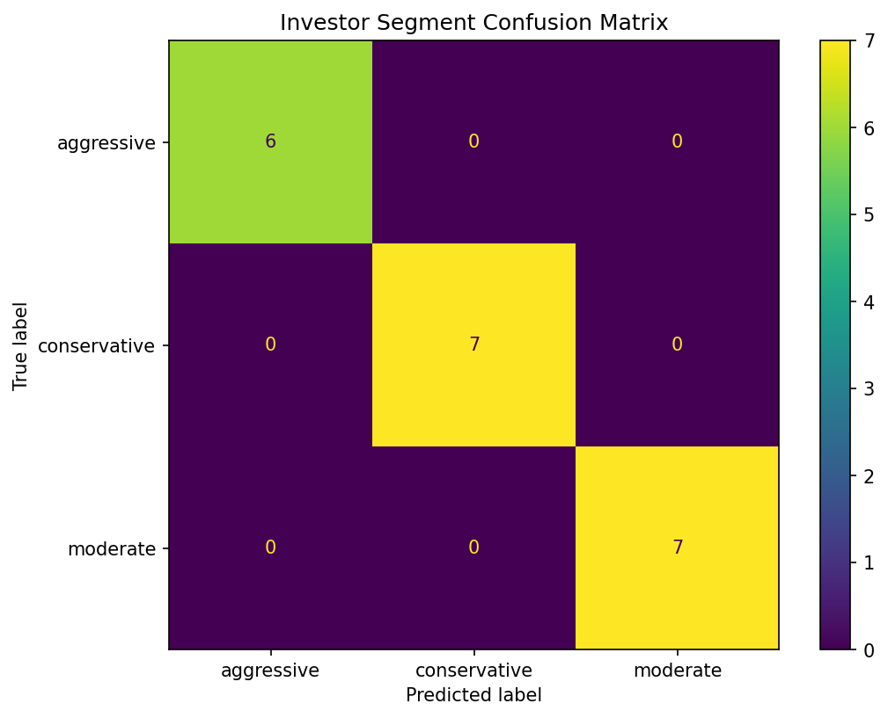

Every analysis, one sentence away
The Finance AI Skill includes 11 built-in analyses — from price charts to machine learning models. Describe what you need in plain English. The skill writes the code, runs it, and explains the results.
Market Analysis
Six tools for any publicly traded stock. Price charts, returns, volatility, risk metrics, peer comparisons, and correlation analysis — generated from a single natural-language prompt.

See any stock's price history — 1 month to 5 years — as a publication-ready chart
Calculate daily returns, cumulative performance, and compare to any benchmark
Measure price volatility and identify regime changes — key for position sizing and risk review
Get Sharpe ratio, max drawdown, and beta in one command — no spreadsheet needed
Compare up to 5 stocks on a normalized basis — ideal for peer analysis and comps
See how your holdings move together — critical for portfolio construction and diversification
ML Workflows
Five tools for your own data. Upload a CSV from your ERP, CRM, or portfolio system. Train regression and classification models. Score new observations. No Python setup, no scikit-learn boilerplate.

Upload your ERP or portfolio CSV — the skill profiles the data, flags anomalies, and identifies modeling targets
Train a regression model on your data to predict liquidity risk scores — no Python, no sklearn setup
Score a new client or position against your trained model — single command, instant result
Train a classification model to segment investors by profile — outputs labeled segments and feature importance
Classify a new investor into a segment using your trained model
Ready to try it? Get Started Free